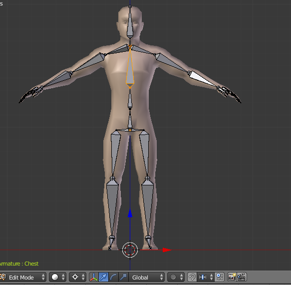
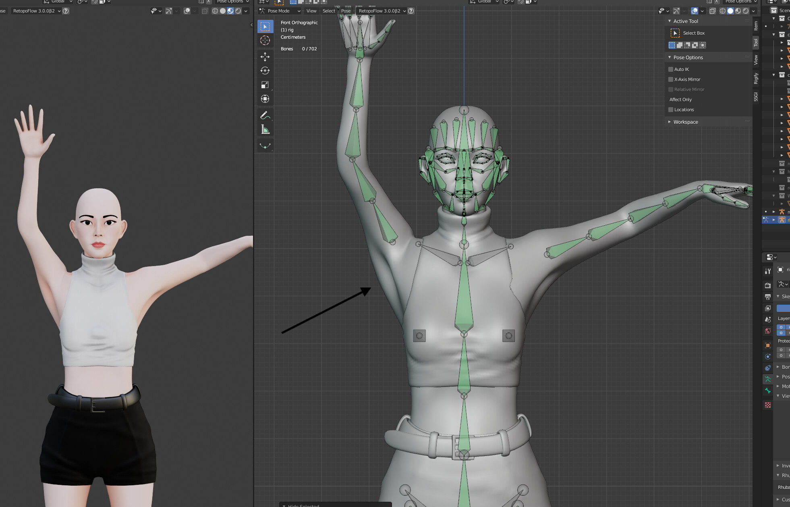

Blender:Rigging
Què és Blender i Rigging
Blender és un programari de codi lliure i gratuït dedicat a la creació i edició de models tridimencionsals entre d'altres coses.
Rigging és una tècnica utilitzada en edició tridimencional que consisteix en construïr un esquelet a una serie d'objectes.
Quan s'utilitza Rigging
Rigging s'utilitza quan vols animar un objecte. Aquesta funcionalitat fa que també s'utilizi quan vols composicions amb un objecte en dierents posicions. D'aquesta manera no has de crear l'objecte en qüestió més d'una vegada.
